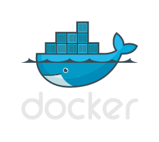
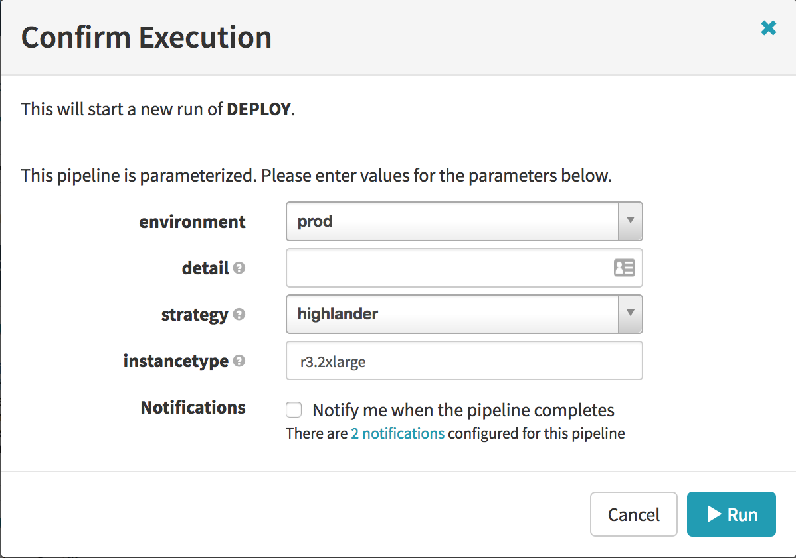
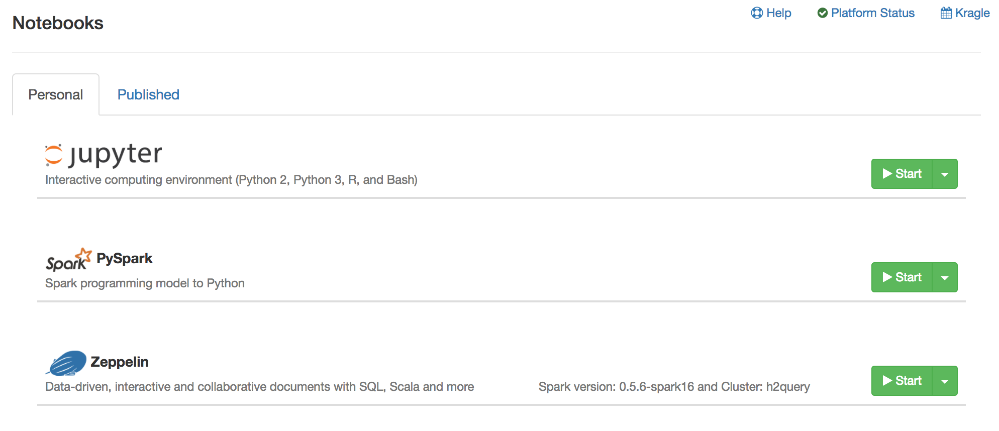
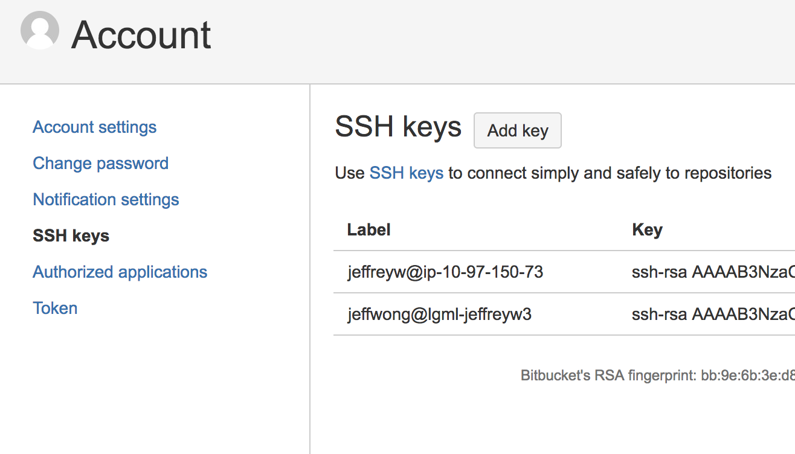

Prefer self-service. Pave a path and point to it. Don't be a gatekeeper. Pave desire paths.

Provide a framework for building services, dev tooling, and ETL.
Support R.
Allow migration of environments.
Continuous Deployment.

Our base project is called Drydock
A container per instance.
Multiple containers per instance.
Currently custom, moving towards Titus.
Runs in the awsprod account.
Notebooks and UC4 will run on Titus.
You will run as root.
Your actual id will be stored in the env variable - BD_USER.
You can change the image, but it won't persist.
The image is large, currently 5GB+
Access to stash/github is currently password based.
If you are really wanting to try scicomp2 out, it is super simple

Please join the relevant google groups scicomp2-beta and
notebook-users
Scicomp2
The replacement for personal gateways.A container per instance.
Pylon
The replacement for query gateway.Multiple containers per instance.
Notebooks
Automic
Or as we affectionately call it UC4.Currently custom, moving towards Titus.
Increased Security
Better identity
Up to date
> rebootRuns with dataeng role
> aws s3 ls
Big data tools
> presto
> prodhive
> prodpig
> spark-shell
> spark-submit
> spark-sql
Persistent shared storage
Across all environmentsMake access to files universal and easy.
This is subject to change (especially the locations in s3)
Folders to know
Locally mounted
> mkdir -p ~/efs && sshfs -o reconnect pylon:/ ~/efs
These instructions will change. Requires osxfuse